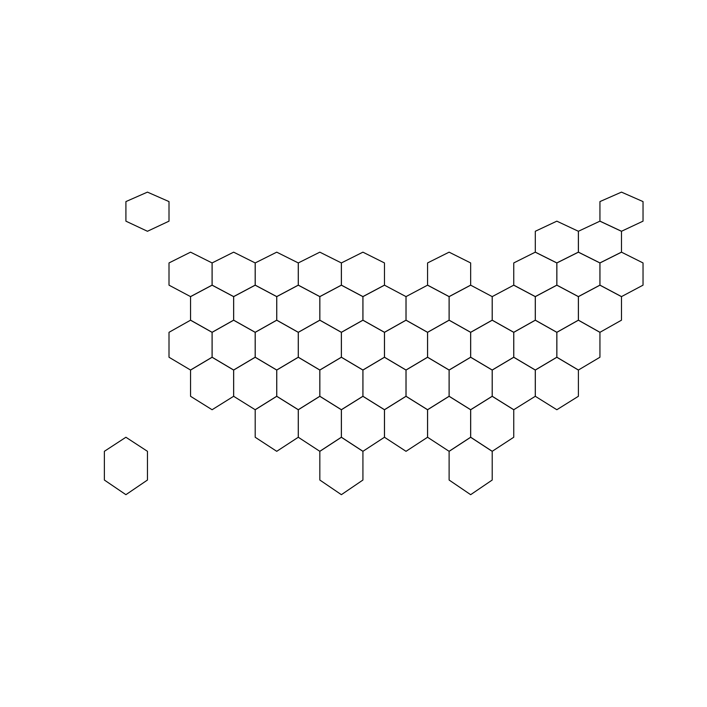
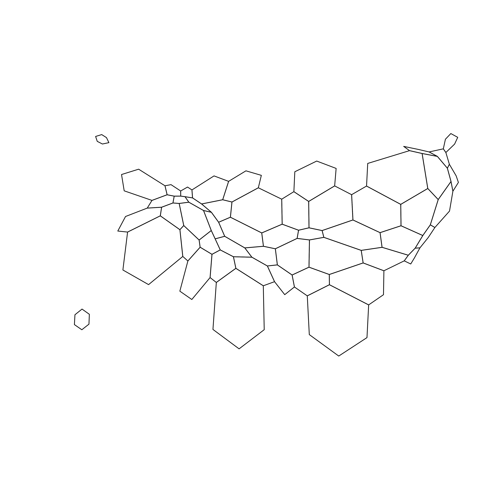
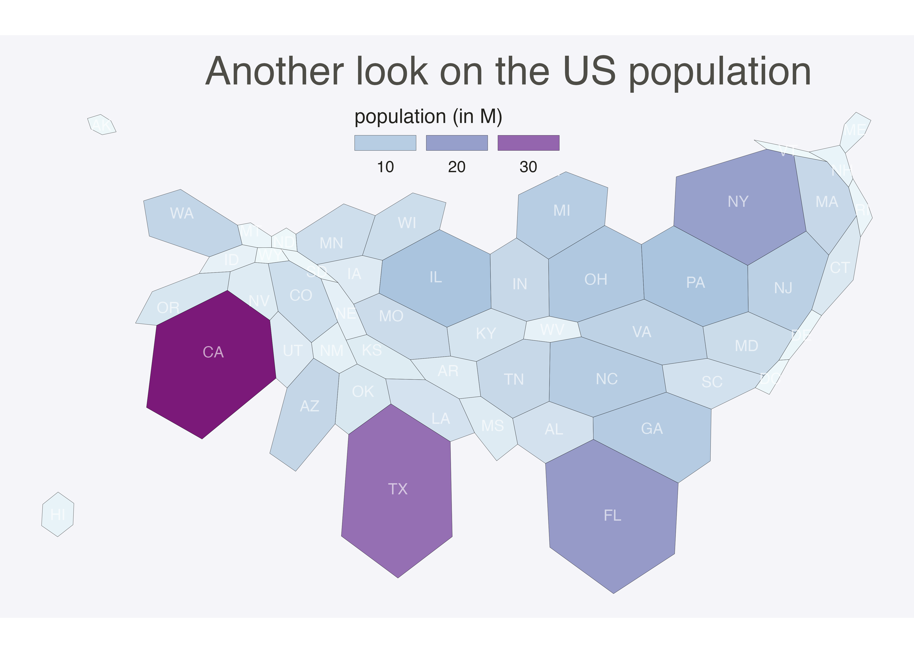

Related chart types

Map

Choropleth

Hexbin map

Cartogram

Connection

Bubble map
This post describes how to apply the cartogram method to a hexbin map. Each region is represented as a hexagon which size is distorted according to a numeric variable. It uses the cartogram package.
The first step is to build a basic hexbin map of the US. Note that the gallery dedicates a whole section to this kind of map.
Hexagones boundaries are provided here. You have to download it at the geojson format and load it in R thanks to the geojson_read() function. You get a geospatial object that you can plot using the plot() function. This is widely explained in the background map section of the gallery.

# library
library(tidyverse)
library(geojsonio)
library(RColorBrewer)
library(rgdal)
# Download the Hexagones boundaries at geojson format here: https://team.carto.com/u/andrew/tables/andrew.us_states_hexgrid/public/map.
# Load this file. (Note: I stored in a folder called DATA)
spdf <- geojson_read("DATA/us_states_hexgrid.geojson.json", what = "sp")
# Bit of reformating
spdf@data = spdf@data %>%
mutate(google_name = gsub(" \\(United States\\)", "", google_name))
# Show it
plot(spdf)cartogramThe geospatial object has a data slot: an attached data frame that provides several information for each region. It is called spdf@data here.
We need to add a new column to this data frame. This column will provide the population per state, available at .csv format here.
We can thus use the cartogram library to distort the size of each state (=hexagon), proportionally to this column. The new geospatial object we get can be drawn with the same plot function.

# Library
library(cartogram)
# Load the population per states (source: https://www.census.gov/data/tables/2017/demo/popest/nation-total.html)
pop <- read.table("https://www.r-graph-gallery.com/wp-content/uploads/2018/01/pop_US.csv", sep=",", header=T)
pop$pop <- pop$pop / 1000000
# merge both
spdf@data <- spdf@data %>% left_join(., pop, by=c("google_name"="state"))
# Compute the cartogram, using this population information
cartogram <- cartogram(spdf, 'pop')
# First look!
plot(cartogram)
To get a satisfying result, let’s:
gCentroid() function.# Library
library(broom) # for the tidy function
library(rgeos) # for the gcentroid function
# tidy data to be drawn by ggplot2 (broom library of the tidyverse)
carto_fortified <- tidy(cartogram, region = "google_name")
carto_fortified <- carto_fortified %>%
left_join(. , cartogram@data, by=c("id"="google_name"))
# Calculate the position of state labels
centers <- cbind.data.frame(data.frame(gCentroid(cartogram, byid=TRUE), id=cartogram@data$iso3166_2))
# plot
ggplot() +
geom_polygon(data = carto_fortified, aes(fill = pop, x = long, y = lat, group = group) , size=0.05, alpha=0.9, color="black") +
scale_fill_gradientn(
colours=brewer.pal(7,"BuPu"), name="population (in M)",
guide=guide_legend( keyheight = unit(3, units = "mm"),
keywidth=unit(12, units = "mm"),
title.position = 'top',
label.position = "bottom")
) +
geom_text(data=centers, aes(x=x, y=y, label=id), color="white", size=3, alpha=0.6) +
theme_void() +
ggtitle( "Another look on the US population" ) +
theme(
legend.position = c(0.5, 0.9),
legend.direction = "horizontal",
text = element_text(color = "#22211d"),
plot.background = element_rect(fill = "#f5f5f9", color = NA),
panel.background = element_rect(fill = "#f5f5f9", color = NA),
legend.background = element_rect(fill = "#f5f5f9", color = NA),
plot.title = element_text(size= 22, hjust=0.5, color = "#4e4d47", margin = margin(b = -0.1, t = 0.4, l = 2, unit = "cm")),
) +
coord_map()Related chart types